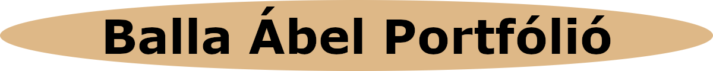
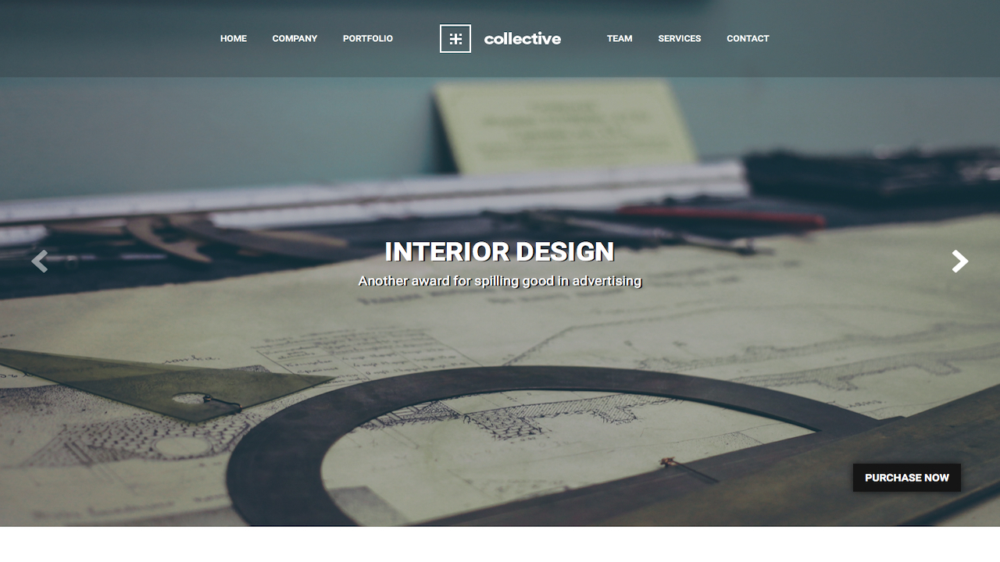

A tervezésről
Mindenképpen egy, az alábbi képhez hasonló, felül vízszintesen elhelyezkedő menüsorral ellátott oldalt szerettem volna készíteni. Jó ötletnek tartottam a gombok animációját, valamint egy egyetemi háttérképet. Szerettem volna mindenképp stílusosan megcsinálni a weboldalt, szóval sok elemhez adtam hozzá árnyékokat, hogy egy kicsit feldobjam a portfóliót. Ehhez egy online generátort használtam.

A felmerülő problémákról
Sokat kellett gondolkodnom, valamint változtatnom a kódon, hiszen a menüsor és a gombok viszonylag nehezen sikerültek olyanra, mint amilyennek megálmodtam őket. Ezenkívül a képek jó módon való elhelyezése is nehézséget okozott, de sikerült megoldanom. Ugyancsak sokat bajlódtam az oldal optimalizálásával különböző képernyőméretekre, hogy kellően reszponzív legyen. Mindenesetre úgy gondolom, sikerült kihoznom a maximumot.
Felhasznált weboldalak, szoftverek
Google Fonts
w3schools.com
css3gen.com
Gimp2
Subline Text 3
Firefox Developer Edition